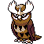

#164
Noctowl
Psychic
Abilities: Tinted Lens, Insomnia, Intimidate
Base stats BST 472
HP100
Attack40
Defense50
Speed60
Sp. Atk106
Sp. Def116
Evolution
dbbw EVOLVE_LEVEL, 36, ORSTRYXLevel-up learnset
LevelMoveType
Lv. 1TackleNormal
Lv. 1ForesightNormal
Lv. 1GrowlNormal
Lv. 1Peck
Lv. 1Sky Attack
Lv. 1Mean LookNormal
Lv. 6HypnosisPsychic
Lv. 9ConfusionPsychic
Lv. 18ExtrasensoryPsychic
Lv. 26Air Slash
Lv. 28Take DownNormal
Lv. 30ReflectPsychic
Lv. 34PsychicPsychic
Lv. 38Zen HeadbuttPsychic
Lv. 42MoonblastFairy
Lv. 46Roost
Lv. 50Dream EaterPsychic
Lv. 54Hurricane